# Create a new class called Dog
class Dog:
"""Class object for a dog."""
passLecture 5 - Object-Oriented Programming, Modules, Packages


- 5.1 Object-Oriented Programming
- 5.2 Modules Coding Basics
- 5.3 Packages Coding Basics
- Appendix 1: Additional OOP Info
- Appendix 2: Modules and Packages Extras
- References
5.1 Object-Oriented Programming
Object-oriented programming (OOP) is a programming approach to structuring programs based on the concept of objects, which can contain data and behaviors in the form of attributes and methods, respectively. For instance, an object can represent a person with attributes like name, age, and address, and methods such as walking, talking, and running. Or, an object can represent an email message with attributes like a recipient list, subject, and body, and methods like adding attachments and sending.
In OOP, computer programs are designed by defining objects that interact with one another. In Python, the main tool for OOP is Python classes. Classes are created using the class statement. Then, from classes we can construct object instances, which are specific objects created from a particular class.
Besides OOP, other programming paradigms on which other languages are based include procedural, functional, and logic programming paradigms.
5.1.1 Defining a Class
The class Statement
Let’s define a class Dog by using the class statement and the name of the class. It is a convention in Python to begin class names with an uppercase letter, and module and function names with a lowercase letter. This is not a requirement, but if you follow this naming convention it will be appreciated by others who are to use your codes.
# Create an instance object of the class Dog named 'sam'
sam = Dog()print(type(sam))<class '__main__.Dog'>In the above code, inside the class definition we currently have just the pass command, which is only a placeholder for the code that we intend to write afterwards and means “do nothing for now”.
Classes can be thought of as blueprints for creating objects. When we defined the class Dog using the line class Dog:, we didn’t actually create an object.
To create an object of the class Dog, we called the class by its name and a pair of parentheses (and optionally we can pass arguments in the parentheses as we did with functions in Python). That is, we instantiated the Dog class, and sam is now the reference to our new instance of the Dog class. Or, the action of creating instances (objects) from an existing class is known as instantiation.
The name sam is referred to as a class instance, or instance object, or class object, or just an instance. We will use these terms interchangeably.
We can create many instances of the same class by calling the class Dog(). For example, below we created two Dog instances sam and frank. Note that although they are both instances of the class Dog, they represent two distinct objects, since the equality code results in False.
sam = Dog()
frank = Dog()
sam == frankFalseAlso note below that the two instances sam and frank have different memory addresses, shown after at in the cell outputs. The addresses for these two instances in your computer’s memory will be different than those shown here.
sam<__main__.Dog at 0x243100c6870>frank<__main__.Dog at 0x243100c61b0>In summary:
Classes serve as instance factories. They provide attributes and methods that are inherited by all the instances created from them.
Instances represent the concrete objects of a class. Their attributes consist of information that varies for specific objects. Their methods describe behavior that is different for specific objects.
Class objects can have attributes and methods.
An attribute is an individual characteristic of an instance of the class. Or, attributes are variables that hold class data.
A method is an operation that is performed with the instances of the class. Or, methods are functions that provide behavior to class objects.
5.1.2 Attributes
As we explained, attributes allow us to attach data to class objects. Python classes can have two types of attributes: instance attributes and class attributes.
Instance Attributes
In Python, instance attributes are defined by using the __init__() constructor method. The term init is abbreviated from initialize, since it is used to initialize the attributes of class instances.
In the parentheses of the __init__() method first self is listed, and afterwards the attributes are listed.
The syntax for creating attributes is:
def __init__(self, attribute1, attribute2, ...):
self.attribute1 = attribute1
self.attribute2 = attribute2For example:
class Dog:
def __init__(self, breed, name):
self.breed = breed
self.name = name# Create an instance from the 'Dog' class by passing breed and name, assign it to the name 'sam'
sam = Dog(breed='Labrador', name='Sam')
# Create another instance from the 'Dog' class by passing breed and name, assign it to the name 'frank'
frank = Dog(breed='Huskie', name='Frank')
# Create another instance from the 'Dog' class by passing breed and name, assign it to the name 'my_dog'
my_dog = Dog(breed='Terrier', name='Scooby')The __init__() method is present in almost every class, and it is used to initialize newly created class instances by passing attributes. In the above example, the attributes breed and name are the arguments to the special method __init__(). Each attribute in a class definition begins with a reference to the class instance, which by convention is named self, such as in self.breed = breed.
When we created the instances of the class Dog, __init__() initialized these objects by passing the assigned values for breed and name to the instances sam, frank, and my_dog. In the __init__() method, the word self is the newly created instance. Therefore, for the instance sam, the line self.breed = breed is equivalent to stating sam.breed = 'Labrador'. Similarly, self.name = name is equivalent to stating sam.name = 'Sam'. Similarly, for the instance frank, self.breed = breed is equivalent to stating frank.breed = 'Huskie' and self refers to the instance frank.
Notice again that sam, frank, and my_dog are three separate instances of the Dog class, and they have their own attributes, i.e., different breed and name.
Accessing Instance Attributes
The syntax for accessing an attribute of a class instance uses the dot operator.
instance.attribute
We can therefore access the attributes breed and name as in the next examples.
# Access the 'breed' attribute of the class instance 'sam'
sam.breed'Labrador'# Access the 'breed' attribute of the class instance 'frank'
frank.breed'Huskie'# Access the 'name' attribute of the class instance 'my_dog'
my_dog.name'Scooby'Note that we cannot access the instance attributes through the class, as in class.attribute, since they are specific to concrete instances of the class. If we try to do that, we will get an Attribute Error.
Dog.name--------------------------------------------------------------------------- AttributeError Traceback (most recent call last) Cell In[12], line 1 ----> 1 Dog.name AttributeError: type object 'Dog' has no attribute 'name'
In general, it is possible to create new classes without the __init__() construction method. This is shown below, where we used a def statement to introduce a method called enterinfo to the class Dog.
class Dog:
def enterinfo(self, breed):
self.breed = breedsam = Dog()
sam.enterinfo(breed='Labrador')sam.breed'Labrador'However, in this case, we need to first create a new class instance sam as shown above, and afterward assign the breed attribute using the enterinfo() method.
On the other hand, by using the __init__() method, we can initialize the instance attributes at the same time when the new instance is created. Therefore, using __init__() is preferred and always recommended. Without __init__(), an empty instance is created, and we need to initialize it afterwards.
In addition, we can dynamically attach new instance attributes to existing class objects that we have already created. In the next cell, the new attribute age is attached to the instance sam. However, it is preferred to define instance attributes inside the class definition, since it makes the code more organized and makes it easier for others to understand or debug our code.
sam.age = 3
print(sam.age)3Modifying Instance Attributes
We can modify the attributes of an instance by using the dot . notation and an assignment statement, as in:
instance.attribute = new_valuefrank.name'Frank'# Modify attribute
frank.name = 'Franki'
frank.name'Franki'To delete any instance attribute, use the del keyword. If we try to access a deleted attribute, we will get an error message.
del frank.name# Error, the name attribute does not exist for 'frank'
print(frank.name, frank.breed)--------------------------------------------------------------------------- AttributeError Traceback (most recent call last) Cell In[20], line 2 1 # Error, the name attribute does not exist for 'frank' ----> 2 print(frank.name, frank.breed) AttributeError: 'Dog' object has no attribute 'name'
Note also that the above code does not delete the attribute name for the other class instances.
# The name attribute still exists for 'my_dog'
my_dog.name'Scooby'Class Attributes
Class attributes in Python are also referred to as class object attributes. The class attributes are the same for all instances of the class.
For example, we could create the attribute species for the Dog class, as shown in the next cell. Regardless of their breed, name, or other attributes, all dog instances will have the same attribute species = 'mammal'. The instances of the class Dog in the next cell also have the instance attributes breed and name which can be unique for each class instance.
We apply this logic in the following manner.
class Dog:
# Class attribute
species = 'mammal'
# Instance attributes
def __init__(self, breed, name):
self.breed = breed
self.name = name# Create an instance from the 'Dog' class by passing breed and name
sam = Dog('Labrador','Sam')Accessing class attributes is the same as accessing instance attributes.
# Access class attributes
sam.species'mammal'# Access instance attributes
sam.name'Sam'Note that the class attribute species is defined directly in the body of the class definition, outside of any methods in the class. Also by convention, the class attributes are placed before the __init__() method.
Also, we can access class attributes through the class via class.attribute, as in the next example.
Dog.species'mammal'Modifying Class Attributes
We cannot modify class attributes via assignment to class instances. In the next example, we first create an instance frank and afterward we use an assignment statement frank.species = 'bird' to modify the attribute species of the class instance frank to bird.
frank = Dog(breed='Huskie', name='Frank')frank.species'mammal'# Reassing the attribute 'species' to 'bird'
frank.species = 'bird'This didn’t change the class attribute for the newly created class instance my_dog, as shown below. Instead, the reassignment frank.species = 'bird' created a new instance attribute species for the class instance frank that has the same name as the class attribute species.
my_dog = Dog(breed='Terrier', name='Scooby')# The class attribute of the new instance is still 'mammal'
my_dog.species'mammal'We can change the class attribute via assignment when using the class name, as shown in the next example.
Dog.species = 'animal'sam = Dog('Labrador','Sam')sam.species'animal'In summary:
- Class attributes are defined in the body of the
classdefinition directly. Class attributes are common to the class. Their data is the same for all instances of the class. - Instance attributes are defined inside the
__init__()method within theclassdefinition. Instance attributes belong to a concrete instance of the class. Their data is specific to that concrete instance of the class.
The __dict__ Attribute
Both classes and instances in Python have a special attribute called __dict__. This attribute is a dictionary, with the keys being the attribute names and the values are the attached attribute values. For a class instance __dict__ holds the instance attributes, and for a class __dict__ holds class attributes and methods.
my_dog.__dict__{'breed': 'Terrier', 'name': 'Scooby'}frank.__dict__{'breed': 'Huskie', 'name': 'Frank', 'species': 'bird'}Dog.__dict__mappingproxy({'__module__': '__main__',
'species': 'animal',
'__init__': <function __main__.Dog.__init__(self, breed, name)>,
'__dict__': <attribute '__dict__' of 'Dog' objects>,
'__weakref__': <attribute '__weakref__' of 'Dog' objects>,
'__doc__': None})Python also allows to change the value of existing instance attributes through __dict__, or even to add new attributes through __dict__.
5.1.3 Methods
Methods are functions defined inside the body of a class. By defining it inside the class, we establish a relationship between the method and the class. Because methods are functions, they can take arguments and return values.
In a Python class, we can define three different types of methods:
- Instance methods, which take the current instance
selfas their first argument. - Class methods, which take the current class
clsas their first argument. - Static methods, which take neither the class nor the instance.
This section describes instance methods, as the most common type of methods in classes. Class methods and static methods are described in the Appendix section.
Instance Methods
Instance methods are functions defined inside the body of a class, designed to perform operations on the class objects.
Methods have access to all attributes for an instance of the class. They can access and modify the attributes through the argument self.
We can basically think of methods as regular functions, with one major difference that the first argument of the method is always the instance object referenced through self.
Technically, even the word self is a convention, and any other term can be used instead of self. However, if you use another word, that would be very unusual for other coders using your code.
Let’s see an example of creating a class named Circle shown below. The objects of this class have three methods: getArea which calculates the area of the circle, getCircumference which calculates the circumference, and SetRadius which allows to change the attribute radius.
class Circle:
pi = 3.14
# Circle gets instantiated with a radius (default is 1)
def __init__(self, radius=1):
self.radius = radius
# Method for getting Area
def getArea(self):
return self.radius * self.radius * self.pi
# Method for getting Circumference
def getCircumference(self):
return self.radius * self.pi * 2
# Method for resetting Radius
def setRadius(self, new_radius):
self.radius = new_radiusNotice that within the methods getArea and getCircumference we used the notation self.radius to reference the instance attribute radius which we defined with the __init__ method inside the body of the class.
Similarly, we defined the class attribute pi = 3.14 inside the body of the class, and since we can access it as an attribute of new instances, we used the notation self.pi to reference it within the methods getArea and getCircumference. As we explained in the previous section, we can also access class attributes through the class name, that is, we could have used the notation Circle.pi within the methods getArea and getCircumference to get access to the class attribute pi.
The two methods getArea and getCircumference don’t take any other arguments except self. The method setRadius takes another argument new_radius, and it allows to change the value of the current attribute radius.
The methods are accessed by using the dot notation, similar to accessing the attributes of class instances.
instance.method()# Let's call it
c = Circle()
print('Radius is: ', c.radius)
print('Area is: ', c.getArea())
print('Circumference is: ', c.getCircumference())Radius is: 1
Area is: 3.14
Circumference is: 6.28Now let’s change the radius with the method setRadius and see how that affects the Circle object:
c.setRadius(3)
print('Radius is: ', c.radius)
print('Area is: ', c.getArea())
print('Circumference is: ', c.getCircumference())Radius is: 3
Area is: 28.26
Circumference is: 18.84Notice again in the above cell that when we call getArea and getCircumference methods, we don’t need to provide a value for the self argument. Python takes care of that step, and it automatically passes the class instance to self.
However, if we wish, we can manually provide the desired class instance when calling these methods. To do this though, we need to call the method on the class, as shown next.
Circle.getCircumference(c)18.84If we try to call the methods on the instance c, that will raise an exception.
c.getCircumference(c)--------------------------------------------------------------------------- TypeError Traceback (most recent call last) Cell In[42], line 1 ----> 1 c.getCircumference(c) TypeError: Circle.getCircumference() takes 1 positional argument but 2 were given
Shown next is one more example of a class Customer with attributes name and balance, and methods withdraw and deposit.
class Customer():
"""A customer of ABC Bank with a checking account. Customers have the
following properties:
Attributes:
name: A string representing the customer's name.
balance: A float tracking the current balance of the customer's account.
"""
def __init__(self, name, balance=0.0):
"""Return a Customer object whose name is *name* and starting
balance is *balance*."""
self.name = name
self.balance = balance
def withdraw(self, amount):
"""Return the balance remaining after withdrawing *amount*
dollars."""
if amount > self.balance:
raise RuntimeError('Amount greater than available balance.')
self.balance -= amount
return self.balance
def deposit(self, amount):
"""Return the balance remaining after depositing *amount*
dollars."""
self.balance += amount
return self.balance# Create a new instance
bob = Customer('Bob Smith', 1000)bob.withdraw(100)900bob.deposit(400)1300# Based on the exception in the 'withdraw' method
bob.withdraw(1600)--------------------------------------------------------------------------- RuntimeError Traceback (most recent call last) Cell In[47], line 2 1 # Based on the exception in the 'withdraw' method ----> 2 bob.withdraw(1600) Cell In[43], line 20, in Customer.withdraw(self, amount) 17 """Return the balance remaining after withdrawing *amount* 18 dollars.""" 19 if amount > self.balance: ---> 20 raise RuntimeError('Amount greater than available balance.') 21 self.balance -= amount 22 return self.balance RuntimeError: Amount greater than available balance.
Polymorphism in Classes
We learned about polymorphism in functions, and we saw that when functions take in different arguments, the actions depend on the type of objects. Similarly, in Python polymorphism exists with classes, where different classes can share the same method name, and these methods can perform different actions based on the object they act upon.
Let’s see an example.
class Dog:
def __init__(self, name):
self.name = name
def speak(self):
return self.name+' says Woof!'
class Cat:
def __init__(self, name):
self.name = name
def speak(self):
return self.name+' says Meow!'
niko = Dog('Niko')
felix = Cat('Felix')
print(niko.speak())
print(felix.speak())Niko says Woof!
Felix says Meow!Here we have a Dog class and a Cat class, and each has a speak() method. When called, each object’s speak() method returns a result that is unique to the class of the instance. This demonstrates polymorphism, because we passed in different object types to the speak() method, and we obtained different object-specific results from the same method.
Naming Conventions in Classes
The recommended naming convention for Python classes is to use capitalized names, and for longer names each word is capitalized and connected without underscores. For example, examples of classes in the machine learning library Keras include Conv2DTranspose, CheckpointCallback, BatchNormalization, etc.
Another naming convention is to include a leading underscore in the names of attributes and methods (e.g., _radius, _calculate_area() in the class Circle) to communicate them as non-public attributes and methods. All regular names (such as radius and calculate_area()) are public attributes and methods.
Public attributes and methods are intended to be part of the official interface or API of the classes, while non-public attributes and methods are not intended to be part of the API. This naming convention indicates that the non-public members should not be used outside their defining class. However, the naming convention does not prevent direct access. Non-public members exist only to support the internal implementation of a given class and may be removed at any time, so we should not rely on them.
5.1.4 Inheritance
Inheritance is the process of creating a new class by reusing the attributes and methods from an existing class. This way, we can edit only what we need to modify in the new class, and this will override the behavior of the old class.
The newly formed inheriting class is known as a subclass or child class or derived class, and the class it inherits from is known as a superclass or parent class or base class.
Important benefits of inheritance are code reuse and reduction of complexity of a program, because the child classes override or extend the functionality of parent classes.
Let’s see an example by incorporating inheritance. In this example, we have four classes: Animal, Dog, Cat, and Fish. Animal is the parent class (superclass), and Dog, Cat, and Fish are the child classes (subclasses).
Note that when defining the child classes Dog, Cat, and Fish, the parent class Animal is listed in parentheses in the class header, i.e., class Dog(Animal).
class Animal:
def __init__(self):
print("Animal created")
def whoAmI(self):
print("Animal")
def eat(self):
print("Eating")
class Dog(Animal): # The class Dog inherits the functionalities of the class Animal
def __init__(self):
Animal.__init__(self) # This can also be replaced with: super().__init__()
print("Dog created")
def whoAmI(self):
print("Dog")
def bark(self):
print("Woof!")
class Cat(Animal): # The class Cat inherits the functionalities of the class Animal
def __init__(self):
# The line Animal.__init__(self) is missing in the Cat class
print("Cat created")
def whoAmI(self):
print("Cat")
class Fish(Animal): # The class Fish inherits the functionalities of the class Animal
# attributes are not specified
def whoAmI(self):
print("Fish")Let’s create instances of the child classes.
d = Dog()Animal created
Dog created# Note the difference in the attributes in comparison to Dog
c = Cat()Cat created# Note the difference in the attributes in comparison to Cat
f = Fish()Animal createdParent classes typically provide generic and common functionality that we can reuse throughout multiple child classes. In this sense, the Animal class provides properties that are common for most other animals.
Child classes inherit attributes and methods from the parent class. For instance, notice that if we call the eat() method with the class instances of Dog and Fish, the word Eating is printed. Although the method eat() is not defined in the classes Dog and Fish, the instances inherit the method from the parent class Animal.
d.eat()Eatingf.eat()EatingThe child classes not only inherit attributes and methods from the parent class, but they can also modify attributes and methods existing in the parent class. This is shown by the method whoAmI(). When this method is called, Python searches for the name first in the child class, and if it is not found, afterwards it searches in the parent class. In this case, whoAmI() method is found in the child classes Dog, Cat, and Fish.
d.whoAmI()Dogc.whoAmI()CatFinally, the child class Dog extends the functionality of the parent class by defining a new bark() method that does not exist in the Animal class.
d.bark()Woof!Similar to inheritance in nature, only child classes inherit from the parent class, and the parent class does not inherit attributes and methods from the child classes.
One more example follows, where Person is a parent class, and Manager is a child class of Person and inherits attributes and methods.
class Person:
def __init__(self, name, job=None, pay=0):
self.name = name
self.job = job
self.pay = pay
def giveRaise(self, percent):
self.pay = int(self.pay * (1 + percent))
class Manager(Person):
def giveRaise(self, percent, bonus=.10):
self.pay = int(self.pay * (1 + percent + bonus)) # Create a new instance of Person
bob = Person('Bob Smith', pay=50000)
bob.giveRaise(percent=0.1) # 50000 * (1+ 0.1) = 50000 * 1.1 = 55000
bob.pay55000# Create a new instance of Manager
tom = Manager('Tom Jones', 'mgr', 50000)
print(tom.name, tom.job, tom.pay)Tom Jones mgr 50000# On a salary of 50,000, giveRaise for Person applied 10% raise, and giveRaise for Manager applied 10% bonus
tom.giveRaise(percent=0.1, bonus=0.1) # 50000 * (1+ 0.1 + 0.1) = 50000 * 1.2 = 60000
tom.pay60000Another way to define the method giveRaise for the Manager child class is by using the syntax below superclass.method(self, arguments), as in Person.giveRaise(self, percent + bonus) shown below. Note that this is different from the syntax above self.method(arguments) as in self.pay = int(self.pay * (1 + percent + bonus)). However, this coding approach using self.method(arguments) does not rely on the superclass Person, and if Person is changed, the code will not work as expected. Therefore, it is preferred to use the syntax superclass.method(self, arguments).
class Manager(Person):
def giveRaise(self, percent, bonus=.10):
Person.giveRaise(self, percent + bonus) tom = Manager('Tom Jones', 'mgr', 50000)
# On a salary of 50,000, giveRaise for Person applied 10% raise, and giveRaise for Manager applied 10% bonus
tom.giveRaise(percent=0.1, bonus=0.1) # Person.giveRaise(.10+0.10) = Person.giveRaise(0.20) # 50000 * 1.2 = 60000
tom.pay60000The super() function
The super() function in Python returns a temporary object of the parent class that allows to call methods from the parent class in child classes. This allows to define new methods in the child class with minimal code changes.
For instance, in the example below, a parent class Rectangle is defined, and a child class Cube is created that inherits from Rectangle. To calculate the volume of a Cube, the child class Cube inherited the method area() from the class Rectangle via super().area(). Since the method volume() for a cube relies on calculating the area of a single face, rather than reimplementing the area calculation, we use the function super() to extend the area calculation. The function super() returns an object of the superclass, and allows to call the method volume() directly through super().area(). Note also that the same result can be achieved by using face_area = self.area(), however using super().area() makes it explicit that we are calling the implementation of the area method in the super class.
class Rectangle:
def __init__(self, length, width):
self.length = length
self.width = width
def area(self):
return self.length * self.width
def perimeter(self):
return 2 * self.length + 2 * self.width
class Cube(Rectangle):
def __init__(self, length, width, height):
self.length = length
self.width = width
self.height = height
def volume(self):
face_area = super().area()
return face_area * self.height cube1 = Cube(4, 4, 2)
cube1.volume()32One more example is provided next, with a parent class Person and child class Student. Note that in the definition of the Student class, we called the __init__() function from the superclass to initialize the attributes student_name, student_age, and student_residence. The call to the parent class super().__init__(student_name, student_age, student_residence) is equivalent to calling the function as Person.__init__(self, student_name, student_age, student_residence).
class Person:
def __init__(self, name, age, residence):
self.name = name
self.age = age
self.residence = residence
def show_name(self):
print(self.name)
def show_age(self):
print(self.age)
class Student(Person):
def __init__(self, student_name, student_age, student_residence, student_id):
super().__init__(student_name, student_age, student_residence)
self.studentId = student_id
def show_id(self):
print(self.studentId) # Create an object of the child class
student1 = Student("Max", 22, "Moscow", "100022")
student1.show_name()Maxstudent1.show_id()100022Class Hierarchies
Using inheritance, we can build class hierarchies, also known as inheritance trees. A class hierarchy is a set of closely related classes that are connected through inheritance and arranged in a tree-like structure. The class or classes at the top of the hierarchy are the parent classes, while the classes below are derived classes or child classes.
Therefore, classes at the top of the hierarchy are generic classes with common functionality, while classes down the hierarchy are more specialized and they inherit attributes and methods from their parent classes and also have their own attributes and methods.
Let’s revisit again the example with the animals, where the following tree hierarchy will be created.
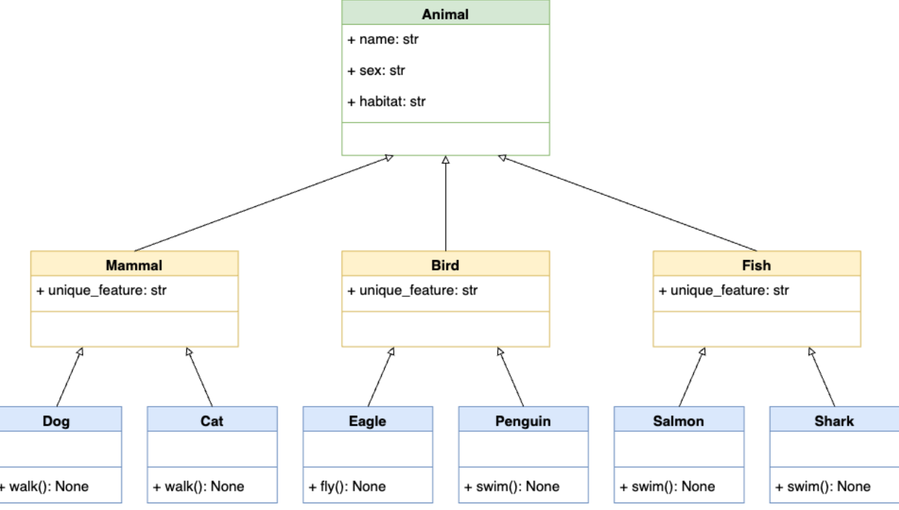
Figure source: Reference [3].In this hierarchy, a parent class Animal is at the top. Below this class, we have subclasses like Mammal, Bird, and Fish, which inherit the attributes and methods from the superclass Animal. At the bottom level, we can have classes like Dog, Cat, Eagle, Penguin, Salmon, and Shark. E.g., Dog and Cat are both mammals and animals, and they inherit from both of these superclasses and have their own attributes and methods.
class Animal:
def __init__(self, name, sex, habitat):
self.name = name
self.sex = sex
self.habitat = habitat
class Mammal(Animal):
unique_feature = "Mammary glands"
class Bird(Animal):
unique_feature = "Feathers"
class Fish(Animal):
unique_feature = "Gills"
class Dog(Mammal):
def walk(self):
print("The dog is walking")
class Cat(Mammal):
def walk(self):
print("The cat is walking")
class Eagle(Bird):
def fly(self):
print("The eagle is flying")
class Penguin(Bird):
def swim(self):
print("The penguin is swimming")
class Salmon(Fish):
def swim(self):
print("The salmon is swimming")
class Shark(Fish):
def swim(self):
print("The shark is swimming")d = Dog('Fido', 'M', 'Europe')d.unique_feature'Mammary glands'd.walk()The dog is walking5.1.5 Special Methods
Python has many built-in methods which can be used with user-defined classes. These methods are also known as special methods or magic methods. Similar to the __init__() method, all special methods have leading and trailing double underscores (also called dunders).
For instance, special methods for mathematical operators in Python involve the following.
a + b a.__add__(b)
a - b a.__sub__(b)
a * b a.__mul__(b)
a / b a.__truediv__(b)
a // b a.__floordiv__(b)
a % b a.__mod__(b)
a << b a.__lshift__(b)
a >> b a.__rshift__(b)
a & b a.__and__(b)
a | b a.__or__(b)
a ^ b a.__xor__(b)
a ** b a.__pow__(b)
-a a.__neg__()
~a a.__invert__()
abs(a) a.__abs__()Special methods for item access in sequences involve the following.
len(x) x.__len__()
x[a] x.__getitem__(a)
x[a] = v x.__setitem__(a,v)
del x[a] x.__delitem__(a)Other type of special methods are used for access to object attributes. These include:
x.a x.__getattr__(a)
x.a = v x.__setattr__(a,v)
del x.a x.__delattr__(a)And there are other types of special methods that are not listed above.
The use of special methods with user-defined classes is also called operator overloading in OOP, because these methods allow the new instances of our user-defined classes to exhibit the behaviors of the applied special methods. For example, the operator + is implemented using the special method __add__() and it can perform addition of numbers, concatenation of strings, etc. Operator overloading in Python is an example of polymorphism in Python. Note that the term polymorphism is more general, and it describes actions performed upon different objects in a different way based on the object, as we saw in the example from the previous section.
By implementing special methods into our user-defined classes, our classes can behave like built-in Python types.
Sequence Length with __len__()
We can implement the special method __len__() in our custom classes, which will allow us to use len() with the instances of the class.
In the example below, we used the method __len__() in the class Employee, which returns the length of the attribute self.pay.
class Employee:
def __init__(self, name, pay):
self.name = name
self.pay = pay
def __len__(self):
return len(self.pay)bob = Employee(name='Bob Smith', pay=[50000, 55000, 53000, 60000])
print(bob.name, bob.pay)Bob Smith [50000, 55000, 53000, 60000]# Length of the bob.pay object
len(bob.pay)4sue = Employee(name='Sue Jones', pay=[50000, 60000])
print(sue.name, sue.pay)Sue Jones [50000, 60000]len(sue.pay)2See the Appendix for additional information about special methods for classes in Python.
5.1.6 When to Use Classes
Classes allow to leverage the power of Python while writing and organizing code. The benefits of using classes include:
Reuse code and avoid repetition: we can define hierarchies of related classes, where the parent classes at the top of a hierarchy provide common functionality that we can reuse later in the child classes down the hierarchy. This allows to reuse code and reduces code duplication.
Group related data and behaviors in a single entity: classes allow to group together related attributes and methods in a single entity. This helps you better organize code using modular entities that can be reused across multiple projects.
Abstract away the implementation details of concepts and objects: classes allow to abstract away the implementation details of core concepts and objects. This helps provide the users with intuitive interfaces to process complex data and behaviors.
In conclusion, Python classes can help write more organized, structured, maintainable, reusable, flexible, and user-friendly code.
On the other hand, we should not use classes for everything in Python, since in some situations, they can overcomplicate our solutions. Sometimes, writing a couple of functions are enough for solving a problem.
For example, we don’t need to use classes when we need to:
- Store only data: if there are no methods inside the body of a class, we can use a dictionary or a named tuple instead.
- Provide a single method: if a class has only one method, it would be better to use a function instead.
- When a functionality is available through built-in types or third-party classes: in that case, we should avoid creating custom classes.
Also, there are other situations where we may not need to use classes, such as: in short and simple programs with simple logic and data structures, in performance-critical programs where classes may slow down the performance, when working in a team with a coding style that doesn’t rely on classes, etc.
Therefore, although classes provide many benefits, they don’t need to be used in every situation. Often, it is preferred to begin with a simple but working code, and if there is a need to use classes, then go for it.
5.2 Modules Coding Basics
Every Python file with code is referred to as a module. To create modules, we don’t need to write special syntax to tell Python that we are making a module. We can simply use any text editor to type Python code into a text file, and save it with a .py extension; any such file is automatically considered a Python module.
For example, I have created a simple file called my_module.py that is saved in the same directory as this Jupyter notebook. The module does not do anything useful, it just defines a few names and prints a few statements. The code inside my_module.py is shown below.
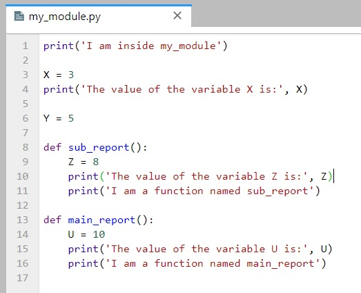
Similar to the rules for naming other variables in Python, module names should follow the same rules and can contain only letters, digits, and underscores. The module names cannot use Python-reserved keywords (e.g., such as a module file named if.py.)
5.2.1 The import Statement
Python programs can use the modules file we have created by running an import or from statement. These statements find, compile, and run a module file’s code. The main difference is that import fetches the module as a whole, while from fetches specific names out of the module.
Let’s import my_module. Python executes the statements in the module file one after another, from the top of the file to the bottom. For this module, the two print statements at the top level of the file are executed. The print statements inside the two functions (main_report and sub_report) are not executed; they will be executed only when the functions sub_report and main_report are called.
import my_moduleI am inside my_module
The value of the variable X is: 3Note that we don’t use the .py extension for the files with the import statement (i.e., import my_module.py will raise an exception).
When the module is imported, a new module object is created. The module object is shown below, where Python mapped the module name to an external filename by adding a directory path from the module search path to the file, and a .py extension at the end.
# The name my_module references to the loaded module object
my_module<module 'my_module' from 'C:\\Users\\avaka\\Documents\\My_Codes\\My_Codes_2025\\CS_4622_5622\\Theme_1-Python_Programming\\Lecture_5-OOP,_Modules,_Packages\\Posted\\Lecture_5-OOP,_Modules,_Packages\\my_module.py'>Overall, the name my_module serves two different purposes: 1. It identifies the external file my_module.py that needs to be loaded. 2. After the module is loaded, it becomes a reference to the module object.
During importing, all the names assigned at the top level of the module become attributes of the module object. In this example, the variables X and Y and the functions sub-report and main_report become attributes of the module, and we can call them by using the object.attribute syntax (a.k.a. qualification).
my_module.X3my_module.Y5my_module.sub_report()The value of the variable Z is: 8
I am a function named sub_report5.2.2 The from Statement
The from statement fetches specific names from the module, and allows to use the names directly (without the need for module_object.attribute). This way, we can call the names in the module with less typing.
from my_module import X
X3The from statement in effect copies the names out of the module into another scope; in this case, in the scope of this Jupyter notebook, where the from statement appears.
When we run a from statement, internally Python first imports the entire module file as usual, then copies the specific names out of the module file, and finally, it deletes the module file. The line from my_module import X is similar to the following code:
import my_module
X = module.X
del my_moduleWith from, we can also import several names at the same time, separated by commas.
from my_module import X, Y, sub_reportsub_report()The value of the variable Z is: 8
I am a function named sub_reportAnother alternative is to use a * instead of specific names, which fetches all names assigned at the top level of the referenced module. The following code fetches all four names in our module: X, Y, sub_report, and main_report. Note again that the names Z and U are not defined at the top level in the module, but are enclosed in the functions, and therefore, they can not be fetched with the import statement.
from my_module import *
main_report()The value of the variable U is: 10
I am a function named main_reportU--------------------------------------------------------------------------- NameError Traceback (most recent call last) Cell In[87], line 1 ----> 1 U NameError: name 'U' is not defined
One problem with using from module import * is that it can silently overwrite variables that have the same name as existing variables in our scope.
In the following example, we have a variable X = 15, which was overwritten by the variable X with the same name in my_module which has the value 3. The way this variable was overwritten may not be obvious (e.g., in large modules with many variables we cannot remember and keep track of all variable names).
X = 15
from my_module import *
print(X)3On the other hand, if we use import, all names will be defined only within the scope of the module, and the names will not collide with other names in our programs.
X = 15
import my_module
# The print statements this time were not displayed (the reason why it so is explained in the Appendix)print(X)
print(my_module.X)15
3Therefore, programmers need to be careful when using the from statement (especially with *), and the import only statement should be preferred. However, from provides convenience of less typing.
When Using import is Required
When the same name of a variable or function is defined in two different modules, and we need to use both of the names at the same time, then we must use the import statement.
For instance, let’s assume that another module file named module_no_2.py also contains a variable X and a function main_report.
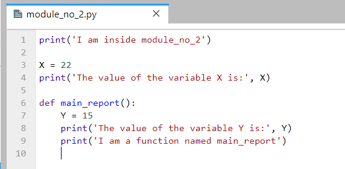
Using import we can load the two different variables X, because including the name of the enclosing module makes the two names unique.
import my_module # when a module is imported the first time, it is executed
import module_no_2 # when a module is imported afterward, it is not executedI am inside module_no_2
The value of the variable X is: 22print(my_module.X)
print(module_no_2.X)3
22The same holds for the function main_report which appears in both modules.
my_module.main_report()
module_no_2.main_report()The value of the variable U is: 10
I am a function named main_report
The value of the variable Y is: 15
I am a function named main_reportIn this case, the from statement will fail because we can have only one assignment to the name X in the scope.
# Only one variable name X can exist at one time
from my_module import X
from module_no_2 import X
print(X)22Another way to resolve the name clashing problem is to use the as extension to from/import that allows to import a name under another name that will be used as a synonym.
from my_module import X as X1
from module_no_2 import X as X2
print(X1)
print(X2)3
22Module Namespaces
Modules can be understood as places where collections of names are defined that we want to make visible to the rest of our code. These collections of names live in the module’s namespace and represent the attributes of the module object.
To access the namespace of my_module object, we can use the built-in dir method. We can notice the names we assigned to the module file: X, Y, main_report, and sub_report. However, Python also adds some names in the module’s namespace for us; for instance, __file__ gives the path to the file the module was loaded from, and __name__ gives the module name.
dir(my_module)['X',
'Y',
'__builtins__',
'__cached__',
'__doc__',
'__file__',
'__loader__',
'__name__',
'__package__',
'__spec__',
'main_report',
'sub_report']Internally, the module namespaces created by imports are stored as dictionary objects. Module namespaces can also be accessed through the built-in __dict__ attribute associated with module objects, where the names are dictionary keys.
my_module.__dict__.keys()dict_keys(['__name__', '__doc__', '__package__', '__loader__', '__spec__', '__file__', '__cached__', '__builtins__', 'X', 'Y', 'sub_report', 'main_report'])my_module.__dict__['__file__']'C:\\Users\\avaka\\Documents\\My_Codes\\My_Codes_2025\\CS_4622_5622\\Theme_1-Python_Programming\\Lecture_5-OOP,_Modules,_Packages\\Posted\\Lecture_5-OOP,_Modules,_Packages\\my_module.py'my_module.__dict__['__name__']'my_module'5.3 Packages Coding Basics
When we create programs in Python, it is helpful to organize the individual module files related to an application into sub-directories. A directory of Python code is referred to as a package or modules package. Importing a directory is known as a package import.
For example, consider the directory MyMainPackage which is located in the same directory as this Jupyter notebook.
MyMainPackage
├── __init__.py
├── main_script
├── MySubPackage
│ ├── __init__.py
│ ├── sub_script.pyTo import the module file sub_script.py which is located inside the directory MySubPackage, we can use the dotted syntax shown in the following cell MyMainPackage.MySubPackage.sub_script. In effect, this turns the directory MyMainPackage into a Python namespace, which has attributes corresponding to the sub-directories and module files that the directory contains.
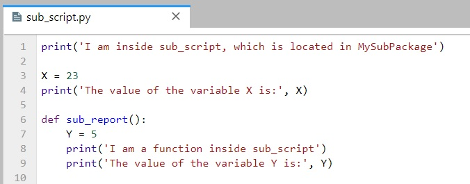
import MyMainPackage.MySubPackage.sub_scriptI am inside sub_script, which is located in MySubPackage
The value of the variable X is: 23As we learned previously, import fetches a module as a whole, and the names (variables and functions) that are defined in the module sub_script.py become attributes of the imported object. These include the variable X and the function sub_report.
MyMainPackage.MySubPackage.sub_script.X23MyMainPackage.MySubPackage.sub_script.sub_report()I am a function inside sub_script
The value of the variable Y is: 5The dotted path in the cell corresponds to the path through the directory hierarchy that leads to the module file sub_script.py, i.e., MyMainPackage\MySubPackage\sub_script.py.
On the other hand, note that syntax with backward slashes does not work with the import statement.
import MyMainPackage\MySubPackage\sub_scriptCell In[103], line 1 import MyMainPackage\MySubPackage\sub_script ^ SyntaxError: unexpected character after line continuation character
Similarly to import and from statements with modules, to fetch specific names from the sub_script.py module, we can use the from statement with packages as well.
from MyMainPackage.MySubPackage.sub_script import XX23from MyMainPackage.MySubPackage.sub_script import sub_reportsub_report()I am a function inside sub_script
The value of the variable Y is: 5Package __init__.py Files
When using package imports, there is one more constraint that we need to follow: each directory named within the path of a package import statement must contain a file named __init__.py. Otherwise, the package import will fail.
In the example we have been using, note that both MyMainPackage and MySubPacakge directories contain a file called __init__.py. The __init__.py names are special, as they declare that a directory is a Python package.
The __init__.py files are very often completely empty, and don’t contain any code. But, they can also contain Python code, just like other module files.
The __init__.pyfiles are run automatically the first time a Python program imports a directory. Because of that, __init__.py files can be used to store code to initialize the state required by files in a package (e.g., to create required data files, open connections to databases, and so on).
On a separate note, don’t confuse __init__.py files in module packages with the __init__() class constructor method that we used before for specifying attributes of class instances. Both have initialization roles, but they are otherwise very different.
5.3.1 Difference Between from and import with Packages
The import statement can be somewhat inconvenient to use with packages, because we may have to retype the paths to the files and sub-directories frequently in our program. In our example, we must retype and rerun the full path from MyMainPackage each time we want to reach the names in the sub_script.py file. Otherwise, we will get an error.
sub_script.X--------------------------------------------------------------------------- NameError Traceback (most recent call last) Cell In[108], line 1 ----> 1 sub_script.X NameError: name 'sub_script' is not defined
MySubPackage.sub_script.X--------------------------------------------------------------------------- NameError Traceback (most recent call last) Cell In[109], line 1 ----> 1 MySubPackage.sub_script.X NameError: name 'MySubPackage' is not defined
MyMainPackage.MySubPackage.sub_script.X23# Use X in our code
print(MyMainPackage.MySubPackage.sub_script.X + 27)
print(MyMainPackage.MySubPackage.sub_script.X % 2)
print((MyMainPackage.MySubPackage.sub_script.X -13)/2)50
1
5.0It is often more convenient to use the from statement with packages to avoid retyping the paths at each access.
from MyMainPackage.MySubPackage.sub_script import X
X23print(X + 27)
print(X % 2)
print((X - 13)/2)50
1
5.0In addition, if we ever restructure or rename the directory tree, the from statement requires just one path update in the code, whereas the import statement may require updates in many lines in the code.
However, import can be advantageous if there are two modules with the same name that are located in different directories, and are used in the same program. With the from statement, we can reach only one of the two modules at a time.
For example, in our MyMainPackage, there is a function sub_report in both the main_script and sub_script. If we use from statement, the name sub_report will change depending on whether it is imported from the main_script or the sub_script.
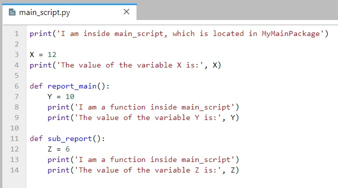
from MyMainPackage.MySubPackage.sub_script import sub_reportsub_report()I am a function inside sub_script
The value of the variable Y is: 5from MyMainPackage.main_script import sub_reportI am inside main_script, which is located in MyMainPackage
The value of the variable X is: 12# Name collision with the sub_report name used in the cell above
sub_report()I am a function inside main_script
The value of the variable Z is: 6But, with the import statement, we can use either of the two functions sub_report, because their names will involve their full path, and this way, the names will not clash. The only inconvenience is that we need to type the full paths to the two functions.
import MyMainPackage.MySubPackage.sub_script
MyMainPackage.MySubPackage.sub_script.sub_report()I am a function inside sub_script
The value of the variable Y is: 5import MyMainPackage.main_script
MyMainPackage.main_script.sub_report()I am a function inside main_script
The value of the variable Z is: 6Another alternative is to use the as extension, which will create unique synonyms for the names of the two functions. As we mentioned before, this extension is commonly used to provide short synonyms for longer names, and to avoid name clashes when we are already using a name in a script that would otherwise be overwritten by a regular import statement.
from MyMainPackage.MySubPackage.sub_script import sub_report as sub_sub_report
sub_sub_report()I am a function inside sub_script
The value of the variable Y is: 5from MyMainPackage.main_script import sub_report as main_sub_report
main_sub_report()I am a function inside main_script
The value of the variable Z is: 6Appendix 1: Additional OOP Info
The material in the Appendix is not required for quizzes and assignments.
Static Methods and Class Methods
In Section 5.1.3 above we studied instance methods, and we explained that they are applied to class instances through the use of the keyword self.
In Python there are also static methods and class methods, that are defined inside a class and are not connected to a particular instance of that class. These methods are created with the built-in decorators @staticmethod and @classmethod.
The following code shows the difference in the syntax between instance method, @classmethod and @staticmethod.
class MyClass:
def instance_method(self, arg1, arg2, argN):
return 'instance method called', self
@classmethod
def classmethod(cls, arg1, arg2, argN):
return 'class method called', cls
@staticmethod
def staticmethod(arg1, arg2, argN):
return 'static method called'Static Methods with @staticmethod
In Python and other programming languages, a static method is a method that does not require the creation of an instance of a class. For Python, it means that the first argument of a static method is not self, but a regular positional or keyword argument. Also, a static method can have no arguments at all, as in the following example.
In general, static methods are used to create helper functions that have a logical connection with the class but do not have access to the attributes or methods of the class, or to the class instances.
class Cellphone:
def __init__(self, brand, number):
self.brand = brand
self.number = number
def get_number(self):
return self.number
@staticmethod
def get_emergency_number():
return "911" Cellphone.get_emergency_number()'911'In this example, get_number() is a regular instance method of the class and requires the creation of an instance. The method get_emergency_number() is a static method because it is decorated with the @staticmethod decorator. Also note that get_emergency_number() does not have self as the first argument, which means that it does not require the creation of an instance of the Cellphone class.
Again, get_emergency_number() can just work as a standalone function, and it does not need to be defined as a static method. However, it makes sense and is intuitive to put it in the Cellphone class because a cellphone should be able to provide the emergency number.
Here is one more example of using a static method. The method is_full_name() just checks whether the entered name for a student consists of more than one string.
class Student():
def __init__(self, first_name, last_name):
self.first_name = first_name
self.last_name = last_name
@staticmethod
def is_full_name(name_str):
names = name_str.split(' ')
return len(names) > 1scott = Student('Scott', 'Robinson')# call the static method
Student.is_full_name('Scott Robinson')True# call the static method
Student.is_full_name('Scott') FalseAnd one more example of using @staticmethod follows. In order to convert the slash-dates to dash-dates, we used the function toDashDate within the Dates class. It is a static method because it doesn’t need to access any properties of the class Dates through self. It is also possible to create a function toDashDate() outside the class, but since it works for dates, it is logical to keep it inside the Dates class.
class Dates:
def __init__(self, date):
self.date = date
def getDate(self):
return self.date
@staticmethod
def toDashDate(slash_date):
return slash_date.replace("/", "-")date1 = Dates("15/12/2016")
date1.getDate()'15/12/2016'date2 = Dates.toDashDate("15/12/2016")
date2'15-12-2016'In addition, static methods are used when we don’t want subclasses of a superclass to change or override a specific implementation of a method. Because @staticmethod is ignorant of the class it is attached to, we can use it in subclasses just as it was defined in the superclass.
In the following code, DatesWithSlashes is derived from the superclass Dates. We wouldn’t want the subclass DatesWithSlashes to override the static method toDashDate() because it only has a single use, i.e., change slash-dates to dash-dates. Therefore, we will use the static method to our advantage by overriding getDate() method in the subclass so that it works well with the DatesWithSlashes class.
class Dates:
def __init__(self, date):
self.date = date
def getDate(self):
return self.date
@staticmethod
def toDashDate(date):
return date.replace("/", "-")
class DatesWithSlashes(Dates):
def getDate(self):
return Dates.toDashDate(self.date)date1 = Dates("15/12/2016")
date1.getDate()'15/12/2016'date2 = DatesWithSlashes("15/12/2016")
date2.getDate()'15-12-2016'Class Methods with @classmethod
In Python, a class method is created with the @classmethod decorator and requires the class itself as the first argument, which is written as cls. A class method returns an instance of the class with supplied arguments or adds other additional functionality.
class Cellphone:
def __init__(self, brand, number):
self.brand = brand
self.number = number
def get_number(self):
return self.number
@staticmethod
def get_emergency_number():
return "911"
@classmethod
def iphone(cls, number):
print("An iPhone is created.")
return cls("Apple", number) # create an iPhone instance using the class method
iphone = Cellphone.iphone("1112223333")An iPhone is created.# call the instance method
iphone.get_number()'1112223333'# call the static method
iphone.get_emergency_number()'911'samsung1 = Cellphone('Samsung', '123456789')samsung1.get_number()'123456789'# the 'iphone' method cannot modify the instance 'samsung1'
samsung1.iphone('222222222')An iPhone is created.<__main__.Cellphone at 0x2431d688f20># the brand attribute of the instance was not modified by the 'iphone' method
# class method cannot modify specific instances
samsung1.brand'Samsung'# the number attribute of the instance was not modified by the 'iphone' method
samsung1.number'123456789'In this example, iphone() is a class method since it is decorated with the @classmethod decorator and has cls as the first argument. It returns an instance of the Cellphone class with the brand preset to 'Apple'.
Class methods are often used as alternative constructors beside the __init__() constructor method, or as factory methods in order to create instances based on different use cases.
This is shown in the following example. Here, the __init__() constructor method takes two parameters name and age. The class method fromBirthYear() takes class, name, and birthYear, and calculates the current age by subtracting it from the current year. That is, it allows to create instances based on the year of birth, instead of based on the age. The reason for it is because we don’t want the list of arguments in the __init__() method to be lengthy and confusing. Instead, we can use class methods to return a new instance based on different arguments.
Note again that the fromBirthYear() method takes Person class as the first parameter cls, and not an instance of the class Person via self. Also, this method returns cls(name, date.today().year - birthYear), which is equivalent to Person(name, date.today().year - birthYear).
from datetime import date
# random Person
class Person:
def __init__(self, name, age):
self.name = name
self.age = age
@classmethod
def fromBirthYear(cls, name, birthYear):
return cls(name, date.today().year - birthYear)
def display(self):
print(self.name + "'s age is: " + str(self.age))person1 = Person('Adam', 19)
person1.display()Adam's age is: 19person2 = Person.fromBirthYear('John', 1985)
person2.display()John's age is: 40# class method cannot modify specific instances
person1.fromBirthYear('John', 1985)<__main__.Person at 0x2431dbd6c90>person1.name'Adam'The main difference between a static method and a class method is:
- Static methods can neither modify the class nor class instances, and they just handle the attributes. They are used to create helper or utility functions. Static methods have a logical connection with the class but do not have access to class or instance states.
- Class methods can modify the class since its parameter is always the class itself, but they cannot modify class instances. They can be used as factory methods to create new instances based on alternative information about a class.
Abstract Classes
An abstract class is one that never expects to be instantiated. In the next example, we will never instantiate an Animal object, but only Dog and Cat objects will be derived from the class Animal.
Abstract classes allow to create a set of methods that must be created within any subclasses built from the abstract class. An abstract method is a method that has a declaration but does not have an implementation. An example is the speak method in the Animal class. Abstract classes are helpful when designing large functional units and we want to provide a common interface for different implementations of a method.
An abstract class is one that is not expected to be instantiated, and contains one or more abstract methods.
Python supports abstract classes through the abc module, which provides the infrastructure for defining abstract classes. Defining an abstract method is achieved by using the @abstractmethod decorator.
from abc import ABC, abstractmethod
# Abstract class
class Animal(ABC):
def __init__(self, name):
self.name = name
@abstractmethod
def speak(self): # Abstract method, it is not implemented
pass
# Subclass of Animal
class Dog(Animal):
def speak(self):
return self.name+' says Woof!'
# Subclass of Animal
class Cat(Animal):
def speak(self):
return self.name+' says Meow!'
# Create instances
fido = Dog('Fido')
isis = Cat('Isis')
# The method 'speak' has different implementations for the subclasses Dog and Cat
print(fido.speak())
print(isis.speak())Fido says Woof!
Isis says Meow!Note that the abstract class Animal cannot be instantiated, because it has only an abstract version of the speak method.
a = Animal('fido')--------------------------------------------------------------------------- TypeError Traceback (most recent call last) Cell In[150], line 1 ----> 1 a = Animal('fido') TypeError: Can't instantiate abstract class Animal without an implementation for abstract method 'speak'
By defining an abstract class, one can define common methods for a set of subclasses. This capability is especially useful in situations where a third-party is going to provide implementations, or it can also help when working in a large team or with a large code-base where maintaining all classes is difficult or not possible.
One more example is shown, where the abstract class Employee has an abstract method get_salary. The subclasses FulltimeEmployee and HourlyEmployee are derived, and they define different get_salary methods for each class. The class Payroll has methods to add an employee and print the name and salary information.
from abc import ABC, abstractmethod
# Abstract class Employee
class Employee(ABC):
def __init__(self, first_name, last_name):
self.first_name = first_name
self.last_name = last_name
@abstractmethod
def get_salary(self):
pass
# Subclass
class FulltimeEmployee(Employee):
def __init__(self, first_name, last_name, salary):
super().__init__(first_name, last_name)
self.salary = salary
def get_salary(self):
return self.salary
# Subclass
class HourlyEmployee(Employee):
def __init__(self, first_name, last_name, worked_hours, rate):
super().__init__(first_name, last_name)
self.worked_hours = worked_hours
self.rate = rate
def get_salary(self):
return self.worked_hours * self.rate
# A separate class Payroll
class Payroll:
def __init__(self):
self.employee_list = []
def add(self, employee):
self.employee_list.append(employee)
def display(self):
for e in self.employee_list:
print(f'{e.first_name} {e.last_name} \t ${e.get_salary()}')payroll = Payroll()
payroll.add(FulltimeEmployee('John', 'Doe', 6000))
payroll.add(FulltimeEmployee('Jane', 'Doe', 6500))
payroll.add(HourlyEmployee('Jenifer', 'Smith', 200, 50))
payroll.add(HourlyEmployee('David', 'Wilson', 150, 100))
payroll.add(HourlyEmployee('Kevin', 'Miller', 100, 150))payroll.display()John Doe $6000
Jane Doe $6500
Jenifer Smith $10000
David Wilson $15000
Kevin Miller $15000Additional Special Methods
Indexing and Slicing with __getitem__() and __setitem__()
Indexing in Python is implemented with the built-in method __getitem__().
list1 = [1, 2, 3]
list1[0]1list1.__getitem__(0)1We can implement the special method __getitem__() in our classes to provide built-in indexing behaviors of Python sequences to our class instances.
In the following code, the index argument is used to specify the elements in self.pay.
class Employee:
def __init__(self, name, pay):
self.name = name
self.pay = pay
def __getitem__(self, index):
return self.pay[index] bob = Employee(name='Bob Smith', pay=[50000, 55000, 53000, 60000])
print(bob.name, bob.pay)Bob Smith [50000, 55000, 53000, 60000]bob[1]55000bob[-1]60000Interestingly, in addition to indexing, __getitem__() is also used for slicing expressions, as shown below. The Python slice object is used for this purpose to define the starting and stopping index (and optional index step) for extracting the elements from a sequence.
list1 = [1, 2, 3, 4, 5]list1[slice(2, 4)][3, 4]list1[slice(1, -1)][2, 3, 4]list1[slice(3, None)][4, 5]This means that we can use the __getitem__() method within our defined class to perform slicing, if we wanted to, and not only indexing.
print(bob.name, bob.pay)Bob Smith [50000, 55000, 53000, 60000]bob[0:2][50000, 55000]bob[1:][55000, 53000, 60000]On the other hand, if we want to change the value of bob.pay outside of the class, we won’t be able to do that.
bob[0] = 25000--------------------------------------------------------------------------- TypeError Traceback (most recent call last) Cell In[167], line 1 ----> 1 bob[0] = 25000 TypeError: 'Employee' object does not support item assignment
The special method __setitem__() allows to assign values to sequence objects. In the example below, new value can be assigned to the elements of the instance bob with a user-entered index.
class Employee:
def __init__(self, name, pay):
self.name = name
self.pay = pay
def __setitem__(self, index, value):
self.pay[index] = value bob = Employee(name='Bob Smith', pay=[50000, 55000, 53000, 60000])
print(bob.name, bob.pay)Bob Smith [50000, 55000, 53000, 60000]bob[0] = 45000print(bob.name, bob.pay)Bob Smith [45000, 55000, 53000, 60000]Printing using __str__() and __repr__()
We know that str() is used to convert an object to a str object. Internally, it is implemented by the __str__() method. Moreover, Python uses __str__() when we call print() to display an object.
Let’s consider again the instance of the Employee class. If we call the instance bob which we created before or if we try to print it, we can see a general Python output that tells us that it is an object created by the Employee class and Python also provides its memory address.
bob<__main__.Employee at 0x2431dc60770>print(bob)<__main__.Employee object at 0x000002431DC60770>We can implement the __str__() method, so that, when the class instance self is printed, we can customize the displayed output. The code below instructs the output to list the employee name and pay. Recall the string formatting methods, which we covered earlier: %s with % (name) formatting, {} with .format(name) formatting, and f strings f with {name} formatting.
class Employee:
def __init__(self, name, pay):
self.name = name
self.pay = pay
def __str__(self):
return 'Employee name %s and pay %s' % (self.name, self.pay)
# return 'Employee name {0} and pay {1}'.format(self.name, self.pay)
# return f'Employee name {self.name} and pay {self.pay}'bob = Employee(name='Bob Smith', pay=50000)
print(bob.name, bob.pay)Bob Smith 50000print(bob)Employee name Bob Smith and pay 50000sue = Employee(name='Sue Jones', pay=60000)
print(sue)Employee name Sue Jones and pay 60000If we enter only the instance name without print, we will still obtain the general Python output.
sue<__main__.Employee at 0x2431dc60da0>Besides the __str__() method, another similar method is __repr__() which stands for representation and it is also used for overloading the print method in Python. It provides another way to customize the printed outputs, and returns what is known as formal string representation. Similarly, the __str__() method is known as informal string representation.
class Employee:
def __init__(self, name, pay):
self.name = name
self.pay = pay
def __repr__(self):
return '<The name and pay for the employee are {} and {} dollars>'.format(self.name, self.pay)sue = Employee(name='Sue Jones', pay=60000)
print(sue)<The name and pay for the employee are Sue Jones and 60000 dollars>Note also in the cell below that the displayed output for sue is the same as for print(sue). I.e., Python uses __repr__() to display the object in the interactive prompt.
sue<The name and pay for the employee are Sue Jones and 60000 dollars>The method __repr__() is more general than _str__() and it applies to nested appearances and a few other additional cases. The __str__() and __repr__() methods are very useful, because when other people are using our codes, they can get a good idea of what an object is by just printing it.
Appendix 2: Modules and Packages Extras
Modules Usage Modes: __name__ and __main__
We mentioned that each module has a built-in attribute called __name__, which Python assigns automatically to all module objects. The attribute is assigned as follows:
- If the file is being imported by using the
importstatement,__name__is set to the module’s name. - If the file is being run as a top-level program file,
__name__is set to the string__main__.
Let’s check it with an example. The module file module_no_3 is shown below, and note that in the first line we will print the assigned attribute __name__ to confirm that the above is correct.
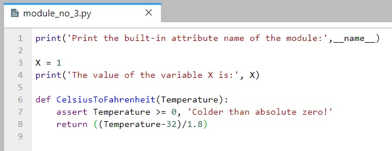
As expected, __name__ is assigned to module_no_3 when imported.
# The module is imported
import module_no_3Print the built-in attribute name of the module: module_no_3
The value of the variable X is: 1When module_no_3 is run directly, __name__ is set to __main__.
# The module is run by passing it as a command to the Python interpreter
!python module_no_3.py
# Or, alternatively
# %run module_no_3.pyPrint the built-in attribute name of the module: __main__
The value of the variable X is: 1Thus, the __name__ attribute can be used in the following test: if __name__ == '__main__' to determine whether it is being run or imported.
Therefore, if the module is the main script in a package and represents an entry point to a package that is run by the end-users (!python mainscript.py), the code after if __name__ == '__main__' in the main script will be executed when the main script is run. On the other hand, all other modules in the package will be imported. Any code under the if __name__ == '__main__' test in other modules will not be executed.
Another reason why using this is helpful is during code development for self-testing code that is written at the bottom of a file under the __name__ test. For instance, the file module_no_3a is similar to the file module_no_3, only that it includes several lines of code at the bottom, which test whether the function CelsiusToFahrenheit outputs expected values. When run as a command in the cell, the if __name__ == '__main__' is True, and the lines that test the outputs of the CelsiusToFahrenheit are run. Conversely, when the module file is imported, the various variables and functions are imported, but the if __name__ == '__main__' is False, and the lines that test the outputs of the CelsiusToFahrenheit are not run.
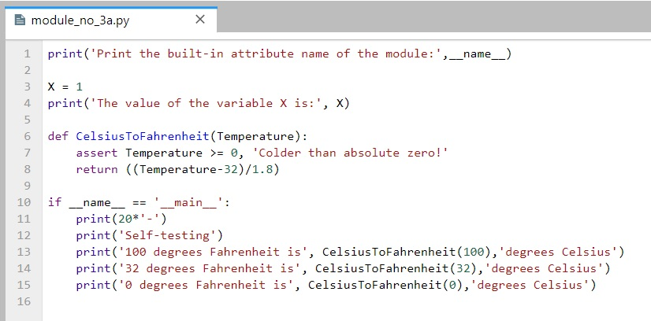
!python module_no_3a.py
# Or, alternatively
# %run module_no_3.pyPrint the built-in attribute name of the module: __main__
The value of the variable X is: 1
--------------------
Self-testing
100 degrees Fahrenheit is 37.77777777777778 degrees Celsius
32 degrees Fahrenheit is 0.0 degrees Celsius
0 degrees Fahrenheit is -17.77777777777778 degrees Celsiusimport module_no_3aPrint the built-in attribute name of the module: module_no_3a
The value of the variable X is: 1The above code allows to test the logic in our code without having to retype everything at the notebook cell or at the interactive command line each time we edit the file. Besides, the output of the self-test call will not appear every time this file is imported from another file.
Functions defined in files with the __name__ test can be run as standalone functions, and they can also be reused in other programs.
Reloading Modules
As we have seen, when we import a module, the code is executed only once when the module is imported the first time. Subsequent imports use the already loaded module object without reloading or rerunning the file’s code.
To force a module’s code to be reloaded and rerun, you need to instruct Python to do so explicitly by calling the reload built-in function. The reload reruns a module file’s code and overwrites its existing namespace, rather than deleting the module object and re-creating it. Also, the reload function returns the module object at the output of the cell.
import my_modulefrom importlib import reload
reload(my_module)I am inside my_module
The value of the variable X is: 3<module 'my_module' from 'C:\\Users\\avaka\\Documents\\My_Codes\\My_Codes_2025\\CS_4622_5622\\Theme_1-Python_Programming\\Lecture_5-OOP,_Modules,_Packages\\Posted\\Lecture_5-OOP,_Modules,_Packages\\my_module.py'>Reloading can help to examine a file, for instance, when we make changes to the file. In this case, since we use Jupyter notebooks, to import a file again after we have made some changes to the file we can just restart the kernel, which will allow us to import the file, without using reload.
Module Packages Reloading
Just like module files, an already imported directory needs to be passed to reload to force re-execution of the code. As shown, reload accepts a dotted path name to reload nested directories and files. Also, reload returns the module object in the displayed output of the cell.
# Repeated import statements do not produce any output
import MyMainPackage.MySubPackage.sub_scriptfrom importlib import reload
reload(MyMainPackage.MySubPackage.sub_script)I am inside sub_script, which is located in MySubPackage
The value of the variable X is: 23<module 'MyMainPackage.MySubPackage.sub_script' from 'C:\\Users\\avaka\\Documents\\My_Codes\\My_Codes_2025\\CS_4622_5622\\Theme_1-Python_Programming\\Lecture_5-OOP,_Modules,_Packages\\Posted\\Lecture_5-OOP,_Modules,_Packages\\MyMainPackage\\MySubPackage\\sub_script.py'>Once imported, sub-script becomes a module object nested in the object MySubPackage, which in turn is nested in the object MyMainPackage.
Similarly, MySubPackage is a module object that is nested in the object MyMainPackage.
MyMainPackage.MySubPackage<module 'MyMainPackage.MySubPackage' from 'C:\\Users\\avaka\\Documents\\My_Codes\\My_Codes_2025\\CS_4622_5622\\Theme_1-Python_Programming\\Lecture_5-OOP,_Modules,_Packages\\Posted\\Lecture_5-OOP,_Modules,_Packages\\MyMainPackage\\MySubPackage\\__init__.py'>Python Path
If the directory MyMainPackage is not in the current working directory, then it may need to be added to the Python search path. To do that, either add the full path to the directory to the PYTHONPATH variable (by setting the Environment Variables on Windows systems), or the path to the directory can be added to a .pth file. Note that if the package is a standard library directory of a built-in function (e.g., random, time, sys, os), or if it is located in the site-packages directory (where third-party libraries are installed), it will be automatically found by Python, and it does not need to be added to the Python search path.
Alternatively, the path to the directory can be manually added using sys.path (that is, the path attribute of the standard library module sys). For instance, I can examine the sys.path on my computer, as shown in the following cell. Since the sys.path is just a list of directories, we can manually add the path of the current working directory, by using the append to list method.
import sys
sys.path['C:\\Users\\avaka\\Documents\\My_Codes\\My_Codes_2025\\CS_4622_5622\\Theme_1-Python_Programming\\Lecture_5-OOP,_Modules,_Packages\\Posted\\Lecture_5-OOP,_Modules,_Packages',
'C:\\Users\\avaka\\anaconda3\\python312.zip',
'C:\\Users\\avaka\\anaconda3\\DLLs',
'C:\\Users\\avaka\\anaconda3\\Lib',
'C:\\Users\\avaka\\anaconda3',
'',
'C:\\Users\\avaka\\anaconda3\\Lib\\site-packages',
'C:\\Users\\avaka\\anaconda3\\Lib\\site-packages\\win32',
'C:\\Users\\avaka\\anaconda3\\Lib\\site-packages\\win32\\lib',
'C:\\Users\\avaka\\anaconda3\\Lib\\site-packages\\Pythonwin',
'C:\\Users\\avaka\\anaconda3\\Lib\\site-packages\\setuptools\\_vendor']sys.path.append('C:\\Users\\vakanski\\Desktop\\Data_Science\\Lecture_5')sys.path
# The appended path is listed last['C:\\Users\\avaka\\Documents\\My_Codes\\My_Codes_2025\\CS_4622_5622\\Theme_1-Python_Programming\\Lecture_5-OOP,_Modules,_Packages\\Posted\\Lecture_5-OOP,_Modules,_Packages',
'C:\\Users\\avaka\\anaconda3\\python312.zip',
'C:\\Users\\avaka\\anaconda3\\DLLs',
'C:\\Users\\avaka\\anaconda3\\Lib',
'C:\\Users\\avaka\\anaconda3',
'',
'C:\\Users\\avaka\\anaconda3\\Lib\\site-packages',
'C:\\Users\\avaka\\anaconda3\\Lib\\site-packages\\win32',
'C:\\Users\\avaka\\anaconda3\\Lib\\site-packages\\win32\\lib',
'C:\\Users\\avaka\\anaconda3\\Lib\\site-packages\\Pythonwin',
'C:\\Users\\avaka\\anaconda3\\Lib\\site-packages\\setuptools\\_vendor',
'C:\\Users\\vakanski\\Desktop\\Data_Science\\Lecture_5']Notice now that the directory MyMainPackage is now listed in the sys.path. However, this modified sys.path is temporary and it is valid only for the duration of the current session; the path is refreshed every time Jupyter Notebook is restarted, or the notebook kernel is shut down. On the other hand, the path configuration in PYTHONPATH is permanent, and it lives after the current session is terminated.
Package Relative Imports
To illustrate package relative imports in Python we will use the MyRelativeImportPackage which is similar to the MyMainPackage and contains several simple files.
MyRelativeImportPackage
├── __init__.py
├── relative_import_script_1
├── relative_import_script_2
├── relative_import_script_5
├── relative_import_script_6
├── script_1
├── script_2
├── script_3
├── script_4
├── MySubPackage
│ ├── __init__.py
│ ├── relative_import_script_3
│ ├── relative_import_script_4
│ ├── sub_scriptWhen modules within a package need to import other names from other modules in the same package, it is still possible to use the full path syntax for importing, as we did in the above section. This is called an absolute import.
For instance, the relative_import_script_1.py in the first line imports script_1 by using the full name of the directory (i.e., from MyRelativeImportPackage import script_1).
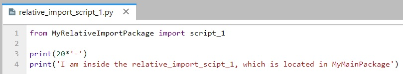
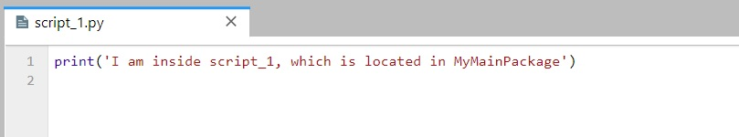
import MyRelativeImportPackage.relative_import_script_1I am inside script_1, which is located in MyMainPackage
--------------------
I am inside the relative_import_scipt_1, which is located in MyMainPackageHowever, package files can also make use of a special syntax to simplify import statements within the same package. Instead of directly using the full path to the directory, Python allows to use a leading dot . to refer to the current directory in the package.
Therefore, instead of using from MyRelativeImportPackage import script_1, we can use from . import script_1. This is implemented in the relative_import_script_2.py to import script_2.
This syntax is referred to as a relative import because the path to the module to be imported is related to the current directory in which the module that imports is located.
The convenience of using relative imports is that we don’t need to write the name or the path of the current directory.
import MyRelativeImportPackage.relative_import_script_2I am inside script_2, which is located in MyMainPackage
--------------------
I am inside the relative_import_scipt_2, which is located in MyMainPackageOne more example is presented in the next cell, where the module relative_import_script_3.py is located in the directory MySubPackage and it imports the module sub_script which is located in the same directory by using the . syntax.
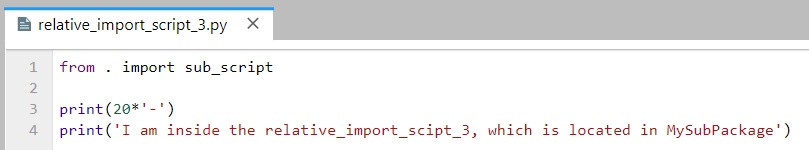
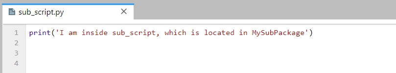
import MyRelativeImportPackage.MySubPackage.relative_import_script_3I am inside sub_script, which is located in MySubPackage
--------------------
I am inside the relative_import_scipt_3, which is located in MySubPackageIf we use two dots syntax as in .., then a module can import another module that is located in its parent directory of the current package (i.e., the directory above). For example, the relative_import_script_4.py is located in the MySubPackage directory, and it uses from .. import script_3 to import the script_3 module that is located in the parent directory of MySubPackage, that is, MyMainPacakage.
import MyRelativeImportPackage.MySubPackage.relative_import_script_4I am inside script_3, which is located in MyMainPackage
--------------------
I am inside the relative_import_scipt_4, which is located in MySubPackageOn the other hand, if we tried to use only import script_3 instead of from . import script_3, this will fail. We must use the from dotted syntax to import modules located in the same package. This is illustrated in the example in the following cell.
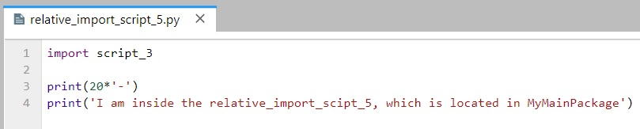
import MyRelativeImportPackage.relative_import_script_5--------------------------------------------------------------------------- ModuleNotFoundError Traceback (most recent call last) Cell In[198], line 1 ----> 1 import MyRelativeImportPackage.relative_import_script_5 File ~\Documents\My_Codes\My_Codes_2025\CS_4622_5622\Theme_1-Python_Programming\Lecture_5-OOP,_Modules,_Packages\Posted\Lecture_5-OOP,_Modules,_Packages\MyRelativeImportPackage\relative_import_script_5.py:1 ----> 1 import script_3 3 print(20*'-') 4 print('I am inside the relative_import_scipt_5, which is located in MyMainPackage') ModuleNotFoundError: No module named 'script_3'
Another way to use the relative imports is shown in the relative_import_script_6.py module, where the syntax from .script_4 import X is used to import the name X from the script_4 module which is located in the same directory as the importer module. This way, we can import specific names from modules in the same package.
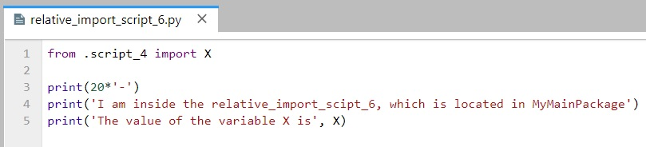
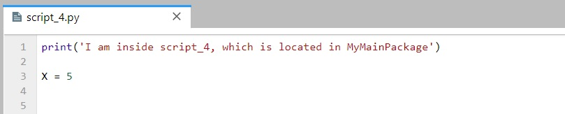
import MyRelativeImportPackage.relative_import_script_6I am inside script_4, which is located in MyMainPackage
--------------------
I am inside the relative_import_scipt_6, which is located in MyMainPackage
The value of the variable X is 5Absolute imports are often preferred because they are straightforward, and it is easy to tell exactly where the imported module or name is located, just by looking at the statement. But, they require more typing and writing full names and paths in the code.
One clear advantage of relative imports is that they are quite succinct, and they can turn a very long import statement into a simple and short statement. Relative imports can be messy, particularly for projects where the organization of the directories is likely to change. Relative imports are also not as readable as absolute ones, and it is not easy to tell the location of the imported names.
References
- Mark Lutz, “Learning Python,” 5th edition, O-Reilly, 2013. ISBN: 978-1-449-35573-9.
- Pierian Data Inc., “Complete Python 3 Bootcamp,” codes available at: link.
- Leodanis Pozo Ramos, Python Classes: The Power of Object-Oriented Programming, available at: link
- Python - Made with ML, Goku Mohandas, codes available at: link.
- Jeff Knupp, Improve Your Python: Python Classes and Object Oriented Programming, available at link.
- Python Tutorial, Python Abstract Classes, available at link.
- Kyle Stratis, Supercharge Your Classes with Python super(), available at link.